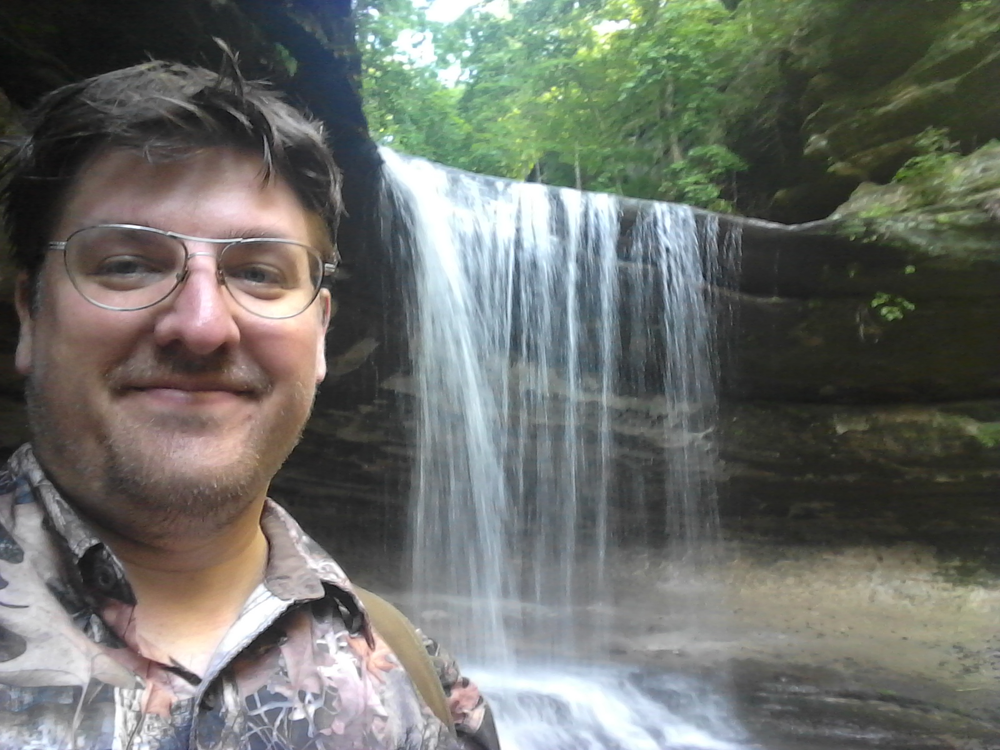
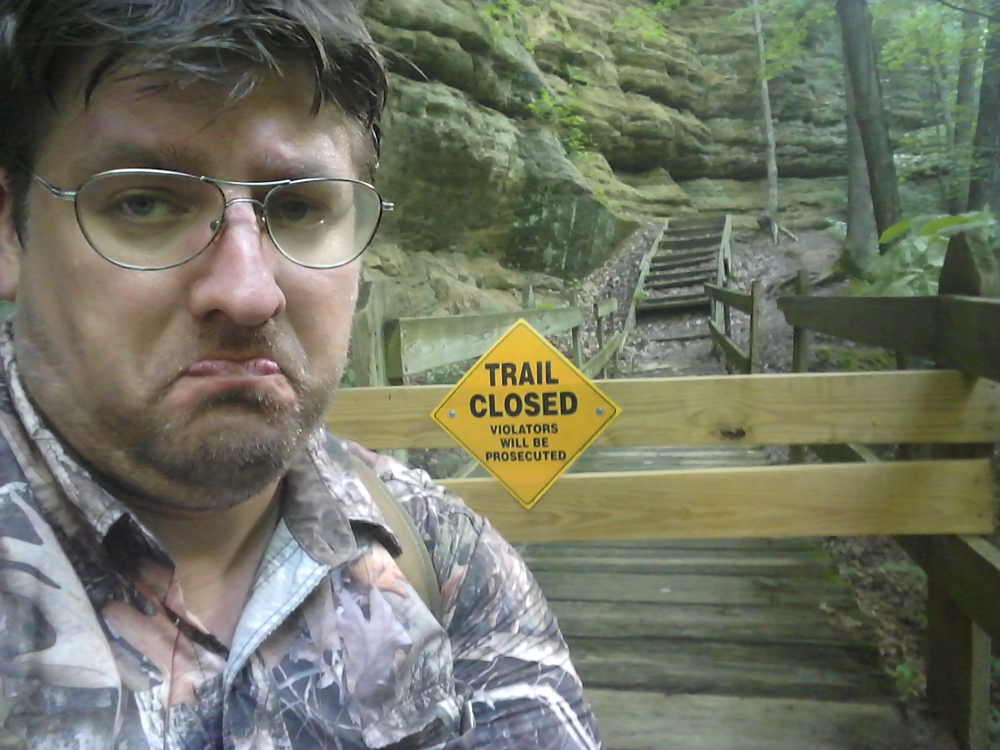

Lasalle Canyon
May 29 2020
Lasalle Canyon was the 1st canyon of the day and the widest of the canyons.
Read More

French Canyon
May 29 2020
French Canyon was a long and exhausting walk, with a little bit of nature.
Read More
